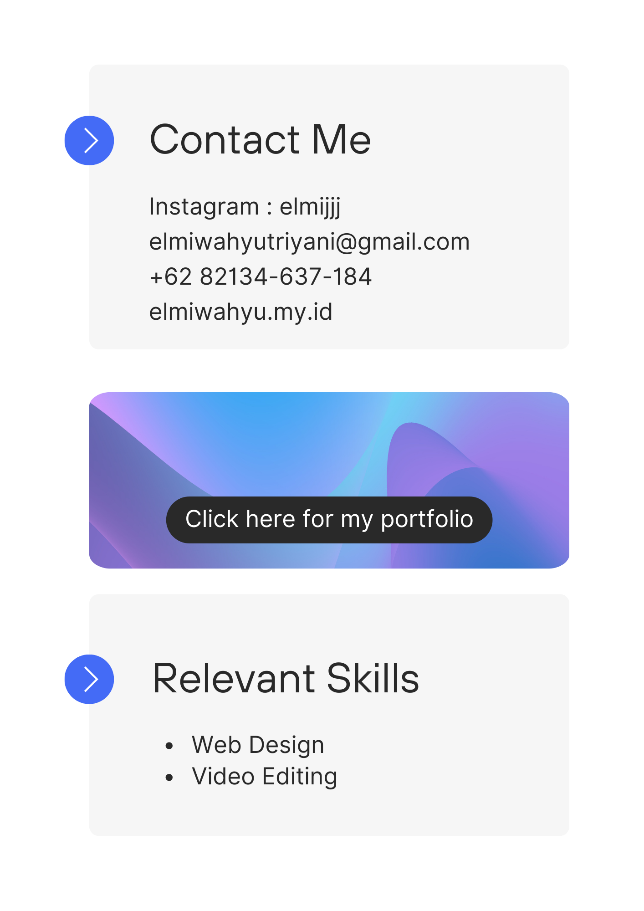

Content Creator
UI UX Designer
I am a dedicated graphic designer committed to creating stunning works that meet clients' needs with my creativity and expertise. I enjoy working in teams and collaborating to achieve the best results. I believe that design is a powerful way to communicate ideas and create a positive impact. I hope to contribute to challenging projects that allow me to continually develop my graphic design skills
SD Negeri 1 Tambakmulyo
Year of Graduation: 2012
SMP Negeri 2 Puring
Year of Graduation: 2018
SMA Negeri 23 Bandung
Year of Graduation: 2021
UIN Sunan Gunung Djati Bandung
2021 to Present
2023 to Present
Every week, I volunteer to teach children ages 4 to 7 years old how to read and write in English.
2023 to Present
I create video content for marketing purposes in a boutique